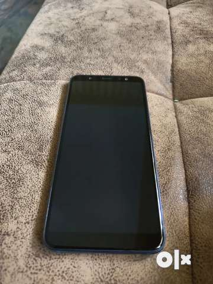

CASE STUDY BETWEEN GOOGLE LENS AND MOBILENET
GOOGLE LENSVS
MOBILENET
-
Test Image-

-
Test Image-

- Test Image- 
-
Test Image-

-
Test Image-

- Test Image-
- Test Image-
- Test Image-
Output on GOOGLE LENS - Flowers in a pot
Output on MOBILENET - Flower Pot
Result -
Both are the same
Output on GOOGLE LENS - SONY WH-XB910N/BZIN Noise Cancelling Headphones
Output on MOBILENET - Wireless Headphones
Result -
Google lens is more Accurate
Output on GOOGLE LENS - Samsung Galaxy A6+ Mobile Phone
Output on MOBILENET - Mobile
Result -
Google Lens is more accurate
Output on GOOGLE LENS - MRF Genius Grand Edition Willow Bat
Output on MOBILENET - Bat
Result -
Google Lens is more accurate
Output on GOOGLE LENS - Football
Output on MOBILENET - Soccer ball
Result -
Both are the same
Output on GOOGLE LENS - Polyurethane Padded Ladies Pink Purse
Output on MOBILENET - Purse
Result -
Google Lens is more accurate
Output on GOOGLE LENS - Magic TV Remote
Output on MOBILENET - Remote
Result -
Google Lens is more accurate
Output on GOOGLE LENS - Plastic Water Bottle in hand
Output on MOBILENET - Water
Result -